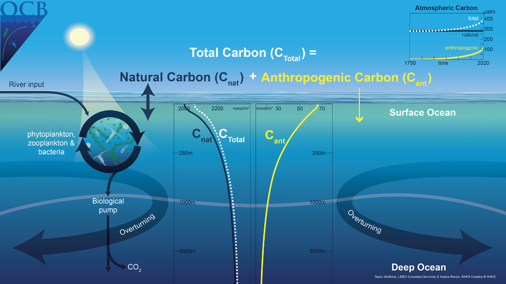
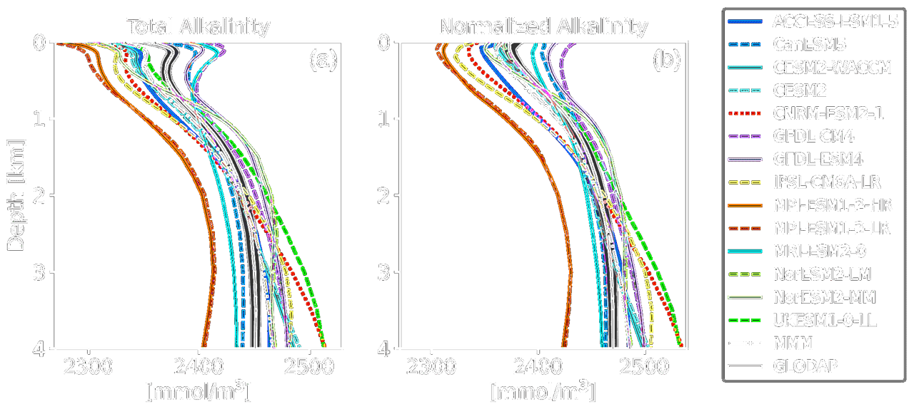
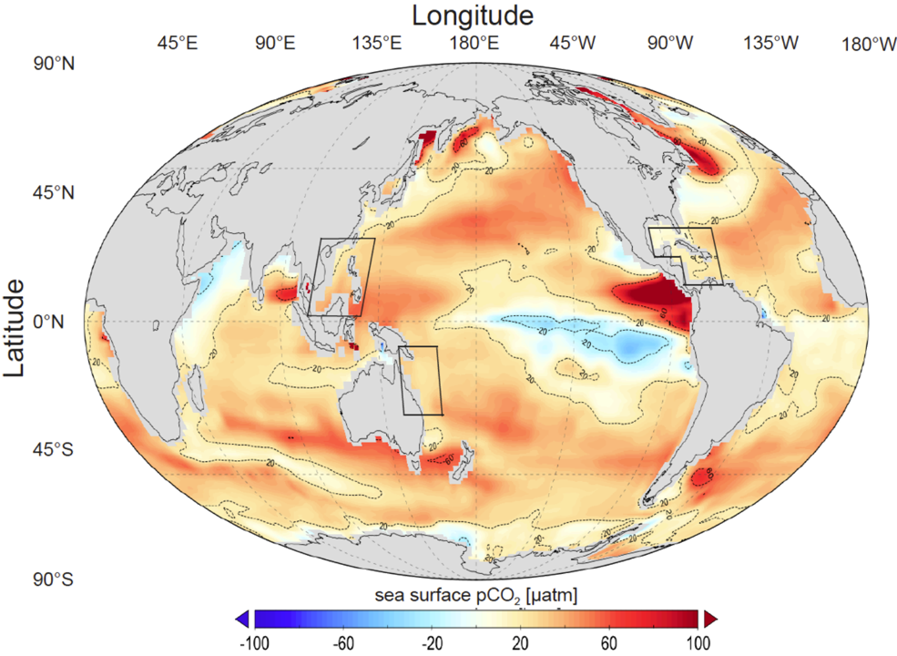
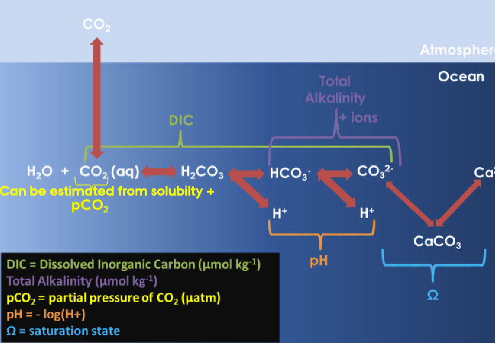

Lecture 5 – Carbon and Plankton
The carbon cycle plays an important role in the Earth’s climate system, with atmospheric carbon dioxide increasing radiative heating of the Earth’s surface. The exchange of carbon between atmosphere, ocean, and terrestrial reservoirs determines the amount of carbon dioxide in the atmosphere. The ocean stores about 60 times as much carbon as the atmosphere, with fifteen per cent or more of the atmospheric inventory passing into and out of the ocean annually. While surface exchanges are rapid, the deeper ocean takes thousands of years to equilibrate due to ocean overturning, and exchanges with sedimentary rocks occur over even longer timescales. Changes in ocean–atmosphere carbon partitioning contribute to glacial–interglacial cycles, amplifying climate perturbations.
(A prime example of carbonate chemistry at an (air/water) interface: the ocean surface. The ocean is the largest sink for the greenhouse gas, carbon dioxide ($\mathrm{CO_2}$). Atmospheric carbon dioxide combines with water to form carbonic acid ($\mathrm{H_2CO_3}$), which then forms carbonate ($\mathrm{CO_3^{2-}}$) and bicarbonate ($\mathrm{HCO_3^-}$) ions. From there, carbonate ions can react with dissolved calcium or magnesium ions to form limestone or other minerals, where carbon can become sequestered.
Credit: NOAA Pacific Marine Environmental Laboratory (PMEL) Carbon Program.)
Carbon dioxide dissolves in seawater and the aqueous form, $\text{CO}_2^{\text{aq}}$, reacts with water to form carbonic acid, $\text{H}_2\text{CO}_3$. These species,
$$
[\text{CO}_2^*] = [\text{CO}_2^{\text{aq}}] + [\text{H}_2\text{CO}_3]
$$
are referred to as dissolved CO$_2$, where square brackets denote concentrations in seawater in terms of the amount per unit mass (µmol kg$^{-1}$).
Molecules of CO$_2$ continually pass across the air–sea interface and there is a flux of the gas (mol cm$^{-2}$ s$^{-1}$) both into and out of the water. When the flux in each direction is of identical magnitude, the air and water reservoirs of CO$_2$ are in equilibrium.
Oceanic Carbon Reservoir System
(Overview of the Oceanic Carbon System. Credit: Crisp et al. 2022.)
The oceans are the world's largest active carbon reservoir. Carbon in the ocean exists in both organic and inorganic forms.
The primary forms of dissolved inorganic carbon (DIC)
in the ocean are bicarbonate ions and carbonate ions.
To discuss their distribution in the ocean, we need to consider the following two reactions:
- CO₂ + CO₃²⁻ + H₂O ⇌ 2HCO₃⁻
- Ca²⁺ + 2HCO₃⁻ ⇌ CaCO₃ + CO₂ + H₂O
To describe this process more precisely, we need to consider several parameters:
- pH: the acidity of seawater (note that pH refers to the negative logarithm of the hydrogen ion activity, not just concentration).
- TAlk (Total Alkalinity): Refers to the total amount of bases in seawater, not equivalent to pOH. It represents the total concentration of substances that can neutralize acids, including bicarbonate, carbonate, borate, hydroxide, and others.
- TCO₂: Refers not to carbon dioxide gas, but to the total dissolved inorganic carbon, which includes CO₂(aq), HCO₃⁻, and CO₃²⁻.
- pCO₂: Refers to the partial pressure of CO₂ in seawater. It is often used in reference to blood.
| Component | Carbon Dioxide (CO₂) | Carbonates |
|---|---|---|
| Sources | Atmospheric uptake, respiration, biological decomposition, volcanic activity, ect. | Precipitation of carbonates |
| Sinks | Outgassing to the atmosphere, photosynthesis, reactions CO₂ + CO₃²⁻ + H₂O ⇌ 2HCO₃⁻, Ca²⁺ + 2HCO₃⁻ ⇌ CaCO₃ + CO₂ + H₂O | Dissolution of carbonates |
Solubility of Carbon Dioxide
Definitions for soluble gases $c$:- The mixing ratio of a gas in air, $X_c$, is the number of moles of the gas per mole of air. This ratio is dimensionless and, for carbon dioxide, often expressed as parts per million by volume (ppmv).
- The concentration of the gas in air can be defined either as the number of moles per unit volume, $\{c_a\}$ (mol m$^{-3}$) or the number of moles per unit mass, $[c_a]$ (mol kg$^{-1}$), where $\{c_a\} = [c_a] \rho_a$ and $\rho_a$ is the density of air at local temperature and pressure. The concentration is related to the mixing ratio by $ \{c_a\} = \frac{X_c p_a}{M_a}, $ where $M_a$ is the mean molecular mass per unit mole of air (kg mol$^{-1}$)
- The partial pressure, $p_c^{\text{at}}$, of the gas in air is the contribution of that gas constituent to the total atmospheric pressure, $p$, given by $p_c = X_c p$, and, for carbon dioxide, is often expressed in terms of micro-atmospheres (µatm).
- The fugacity, $f_c^{\text{at}}$ (µatm), is an effective partial pressure, corrected to account for the non-ideal nature of real gases; for carbon dioxide the correction is typically $< 1\%$.
- The concentration of the dissolved gas in water is either expressed per unit volume, $\{c\}$ (mol m$^{-3}$), or unit mass, $[c]$ (mol kg$^{-1}$), where $\{c\} = [c] \rho_w$ and $\rho_w$ is the density of water at the given pressure, temperature and salinity.
- The solubility, $K_0$, quantifies the ratio of the concentration of the dissolved gas in seawater and the partial pressure in the air when they are in equilibrium: $$ K_0^c \equiv \frac{[c]}{p_c} $$

(Schematic view of a simple closed vessel which contains seawater and an airspace above. Molecules of all soluble gases (filled and open circles), continually pass across the air–water interface in both directions. Filled circles represent a soluble gas, $c$, which has concentration in water $[c]$ ($\mu \text{mol} \, \text{kg}^{-1}$) and a partial pressure in the airspace $p_c$ ($\mu \text{atm}$).
Credit: Williams RG, Follows MJ 2011. Ocean Dynamics and the Carbon Cycle: Principles and Mechanisms.)
The greater the abundance of molecules of $c$ in the air, the greater the likelihood of one crossing into the water. Thus, the flux into the water is proportional to the partial pressure, $p_c$,
$$
\text{Flux in} = K_{\text{in}} p_c,
$$
and the flux out of the water is proportional to the dissolved concentration $[c]$,
$$
\text{Flux out} = -K_{\text{out}} [c],
$$
where $K_{\text{in}}$ and $K_{\text{out}}$ are constants of proportionality (with different units). At equilibrium, the flux in must exactly balance the flux out, and $p_c$ and $[c]$ are unchanging. In this case,
$$
\frac{[c]}{p_c} = \frac{K_{\text{in}}}{K_{\text{out}}} = K_0^c,
$$
where $K_0^c$ (mol kg$^{-1}$ atm$^{-1}$) is the solubility for a general gas $c$; we will use $K_0$ to denote the solubility of CO$_2$. The solubility reflects the relative efficiency with which molecules pass into and out of the water, and varies with environmental factors, including temperature and salinity.
- The kinetic energy of molecules in solution increases at higher temperatures and, thus, dissolved gas molecules are more likely to have sufficient energy to cross the air–sea interface. Hence, the solubility of a dissolved gas decreases with increasing temperature.


(a. The annual-mean difference in surface ocean and lower-atmosphere partial pressure of carbon dioxide,
$
\Delta p\mathrm{CO}_2 = p\mathrm{CO}_2 - p\mathrm{CO}_2^{\text{at}} \quad (\mu \text{atm})
$
. There is ocean uptake of CO$_2$ (light shading) over parts of the high latitudes where the partial pressure in the atmosphere is greater than in the ocean. Conversely, there is ocean outgassing (dark shading) in the tropics and possibly over parts of the Southern Ocean. This climatology represents a large compilation of surface ocean observations normalized to reference year 1995 (non-El Niño conditions) and mapped onto a grid of $4^\circ \times 5^\circ$; white regions around continents are areas with no ocean data due to the coarse-grained gridding.
b. Observed changes in surface ocean (0–20 m) $p\mathrm{CO}_2$ at the Hawaii Ocean Time-Series station and atmospheric $p\mathrm{CO}_2$ observed at Mauna Loa, Hawaii. Surface ocean $p\mathrm{CO}_2$ follows the rise in atmospheric $p\mathrm{CO}_2$ due to air–sea exchange. For this region, surface ocean $p\mathrm{CO}_2$ is always lower than in the atmosphere, driven away from a local equilibrium by ocean circulation and biological activity, and so there is a local ocean uptake of CO$_2$ (ocean data from Dore, 2009; atmospheric data from NOAA/ESRL).
Credit: Williams RG, Follows MJ 2011. Ocean Dynamics and the Carbon Cycle: Principles and Mechanisms.)
- If the effective partial pressure, $p\mathrm{CO}_2$, in seawater is greater than the partial pressure in the overlying atmosphere, $p\mathrm{CO}_2^{\text{at}}$, CO$_2$ outgasses from the ocean: gas molecules are statistically more likely to pass out of the water than into it.
- If the surface seawater partial pressure is lower than that of the overlying atmosphere, there is a net flux of CO$_2$ into the ocean.
The atmospheric partial pressure, $p\mathrm{CO}_2^{\text{at}}$, is relatively homogeneous, so that the air–sea flux of CO$_2$ is controlled by regional and seasonal variations in $p\mathrm{CO}_2$, which in turn depend upon the variations in $[ \mathrm{CO}_2^* ]$ and $K_0$.
Dissolved carbon dioxide, CO$_2^*$, reacts with water to form bicarbonate ions, HCO$_3^-$, which in turn dissociate to form carbonate ions, CO$_3^{2-}$: $$ \text{CO}_2^* + \text{H}_2\text{O} \rightleftharpoons \text{HCO}_3^- + \text{H}^+ $$ $$ \text{HCO}_3^- \rightleftharpoons \text{CO}_3^{2-} + \text{H}^+ $$ An excess of hydrogen means a liquid is an ACID. A lack of hydrogen leads to a BASE.

(Global surface distribution of pH:
$
\text{pH} = -\log_{10}([\text{H}^+])
$
where $[\text{H}^+]$ is hydrogen ion concentration, determined assuming thermodynamic equilibrium between the components based on climatological DIC and alkalinity, and using annual-mean surface climatologies of temperature, salinity, phosphate, silicic acid.
Credit: Williams RG, Follows MJ 2011. Ocean Dynamics and the Carbon Cycle: Principles and Mechanisms.)
The acidification of sea water will change the way marine ecosystems work. Calcareous organisms and corals are particularly sensitive. These organisms build their shells of calcium carbonate, and acidification of water reduces the number of carbonate ions that is available for this. If sea water becomes excessively acidic, it may even start dissolving the calcareous shells of organisms.

(A pteropod shell is shown dissolving over time in seawater with a lower pH. When carbon dioxide is absorbed by the ocean from the atmosphere, the chemistry of the seawater is changed. Credit: NOAA Pacific Marine Environmental Laboratory (PMEL) Carbon Program.)
The Buffer Effect
The abundance of negatively charged carbonate and bicarbonate ions causes seawater to have a strong negative feedback, or buffering, against changes in hydrogen ion concentration. If an acid is added to seawater, $[\text{H}^+]$ instantaneously increases with the consequence of driving reactions $ \text{CO}_2^* + \text{H}_2\text{O} \rightleftharpoons \text{HCO}_3^- + \text{H}^+ $ and $ \text{HCO}_3^- \rightleftharpoons \text{CO}_3^{2-} + \text{H}^+ $ to the left, rapidly consuming the additional hydrogen ions again.- At pH close to the modern surface ocean value of $\text{pH} \approx 8.1$, most of the dissolved inorganic carbon (DIC) is in the form of $\text{HCO}_3^-$.
- At low pH, most of the DIC is instead held as $\text{CO}_2^*$, since the high concentration of hydrogen ions $[\text{H}^+]$ pushes reactions to the left, consuming carbonate ions $\text{CO}_3^{2-}$.
- Conversely, at high pH, there is low $[\text{H}^+]$, leading to $\text{CO}_3^{2-}$ being more abundant.

(The Bjerrum plot reveals the partitioning of carbonate species as a function of pH. Dissolved inorganic carbon, DIC, is partitioned between CO$_2^*$ (dashed line), HCO$_3^-$ (full line), and CO$_3^{2-}$ (dotted line). Lower pH indicates a higher $[\text{H}^+]$,
pushing reactions $\text{CO}_2^* + \text{H}_2\text{O} \rightleftharpoons \text{HCO}_3^- + \text{H}^+ $ and $\text{HCO}_3^- \rightleftharpoons \text{CO}_3^{2-} + \text{H}^+ $ to the left, consuming CO$_3^{2-}$ and favouring CO$_2^*$. For this plot, the carbonate system was solved at fixed $T$, $S$, $A_T$, and DIC, while varying pH.
Credit: Williams RG, Follows MJ 2011. Ocean Dynamics and the Carbon Cycle: Principles and Mechanisms.)
The figure above represents the typical acid-base dissociation equilibrium of carbonate and bicarbonate ions in aqueous solution.
Based on a simplified derivation, we can obtain an approximate expression for pH under this equilibrium condition.
Carbonic acid (H₂CO₃) undergoes a second dissociation step:
$$
\mathrm{HCO_3^-} \rightleftharpoons \mathrm{H^+} + \mathrm{CO_3^{2-}}
$$
The expression for the second dissociation equilibrium constant $K_{a2}$ is:
$$
K_{a2} = \frac{c(\mathrm{H^+}) \cdot c(\mathrm{CO_3^{2-}})}{c(\mathrm{HCO_3^-})}
$$
Transform this expression for $K_{a2}$, taking the logarithm of both sides and using the logarithmic rule $\lg(ab) = \lg a + \lg b$:
$$
-\lg K_{a2} = -\lg \left( \frac{c(\mathrm{H^+}) \cdot c(\mathrm{CO_3^{2-}})}{c(\mathrm{HCO_3^-})} \right)
$$
$$
= -\lg c(\mathrm{H^+}) - \lg c(\mathrm{CO_3^{2-}}) + \lg c(\mathrm{HCO_3^-})
$$
Rewriting with pH and $\mathrm{p}K_{a2} = -\lg K_{a2}$:
$$
\mathrm{p}K_{a2} = \mathrm{pH} - \lg \left( \frac{c(\mathrm{CO_3^{2-}})}{c(\mathrm{HCO_3^-})} \right)
$$
Solving for pH:
$$
\mathrm{pH} = \mathrm{p}K_{a2} + \lg \left( \frac{c(\mathrm{CO_3^{2-}})}{c(\mathrm{HCO_3^-})} \right)
$$
We can then use this simple formula to estimate the pH of an aqueous solution:
$$
\boxed{
\mathrm{pH} = \mathrm{p}K_2 + \lg \left( \frac{\mathrm{CO_3^{2-}}}{\mathrm{HCO_3^-}} \right)
}
$$
It is easy to obtain that under constant physical conditions such as temperature and pressure,
all chemical equilibrium constants should remain unchanged,
and therefore pH should also remain stable. In other words, Equation $
\boxed{
\mathrm{pH} = \mathrm{p}K_2 + \lg \left( \frac{\mathrm{CO_3^{2-}}}{\mathrm{HCO_3^-}} \right)
}
$ only applies to the ratio of carbonate ions to bicarbonate ions under such stable conditions.
However, it is important to note that:
- This equation is valid only for the open ocean and oxygen-rich regions.
- In coastal areas or oxygen-deficient zones, due to the influence of weak organic acids (such as humic acid, phosphoric acid, etc.), it becomes difficult to ignore these effects. In such environments, the simplified aqueous solution and assumptions used in the above derivation may not be applicable.
Similarly, if the solubility of carbonate minerals decreases, pH may rise. Conversely, if carbonates themselves begin to precipitate, the resulting reduction in alkalinity may cause pH to decrease. Based on this logic, we can plot how ocean pH changes with increasing depth.
Alkalinity
We already have a rough understanding of the composition of seawater, so we can write: $$ \text{Alk} = [\mathrm{HCO_3^-}] + 2[\mathrm{CO_3^{2-}}] + [\mathrm{B(OH)_4^-}] + [\mathrm{OH^-}] - [\mathrm{H^+}] + 2[\mathrm{PO_4^{3-}}] + [\mathrm{HPO_4^{2-}}] + [\mathrm{SiO(OH)_3^-}] + [\mathrm{NH_3}] + [\mathrm{HS^-}] - [\mathrm{HSO_4^-}] - [\mathrm{HF}] - [\mathrm{H_3PO_4}] $$ If we omit less abundant species, we can simplify the formula to: $$ \text{Alk} = [\mathrm{HCO_3^-}] + 2[\mathrm{CO_3^{2-}}] + [\mathrm{B(OH)_4^-}] + [\mathrm{OH^-}] - [\mathrm{H^+}]_F + $$ This simplified expression accounts for over 98% of alkalinity in seawater, and is thus a good approximation. For further simplification we get the final expression: $$ \text{Alk} = [\mathrm{HCO_3^-}] + 2[\mathrm{CO_3^{2-}}] + [\mathrm{B(OH)_4^-}] $$ In the above, borate alkalinity accounts for less than 5%. As emphasized in previous discussions, the carbonate system is the most important contributor to alkalinity in seawater. To explore further, we consider the broader charge balance in seawater by accounting for conserved ions: $$ \underbrace{[\mathrm{Na^+}] + [\mathrm{K^+}] + 2[\mathrm{Ca^{2+}}] + 2[\mathrm{Mg^{2+}}]}_{\text{Total charge of conservative cations}} = \underbrace{[\mathrm{Cl^-}] + [\mathrm{SO_4^{2-}}]}_{\text{Total charge of conservative anions}} + \underbrace{[\mathrm{HCO_3^-}] + 2[\mathrm{CO_3^{2-}}] + [\mathrm{OH^-}] - [\mathrm{H^+}]}_{\text{Net charge of non-conservative ions}} $$ From this complete charge balance, we see that since the major ions (e.g., Na⁺, Cl⁻) do not participate in carbonate chemistry, their charges must be balanced by those that do—namely HCO₃⁻, CO₃²⁻, OH⁻, and H⁺. Total alkalinity (TA) is therefore understood as difference between total conserved cation and anion charge.From this, we can conclude Although TA is itself conservative, the proton-exchange processes involved are not. Therefore, TA is influenced by chemical and biological processes such as CO₂ uptake, even though its value does not change with simple dilution or mixing.


((a) Annual-mean surface map of total alkalinity (µmol kg$^{-1}$), together with
(b) total alkalinity versus salinity (g kg$^{-1}$) in the uppermost 25 m of the ocean from data, and
(c) the equilibrium relationship of DIC (µmol kg$^{-1}$) to total alkalinity $A_T$ with
$
\text{pCO}_2 = 278 \, \mu\text{atm}, T = 20^\circ \text{C}, \text{ and } S = 34.5 \, \text{g kg}^{-1}.
$
Credit: Williams RG, Follows MJ 2011. Ocean Dynamics and the Carbon Cycle: Principles and Mechanisms.)
Therefore, the most significant factor influencing the TA is salinity. Specifically, salinity reflects the total ionic strength—the higher the salinity, the stronger the ionic strength.
Hence, TA and ionic strength tend to show a strong positive correlation: as salinity increases, TA tends to increase as well. Similarly, processes like evaporation, precipitation, and runoff that modify local salinity also affect TA accordingly.Thus, the distribution of TA closely follows the pattern of salinity distribution. It shows a “meridional saddle-shaped pattern,” with peak values appearing in the subtropical convergence zones and a banded structure along latitudes.
Although, as previously discussed, carbon dioxide behavior has little direct effect on TA, we must not forget that the system also includes carbonate minerals. The previous conclusion holds only if those are excluded. If carbonate minerals dissolve (e.g., due to undersaturation), they increase the total charge of ions in solution, thereby increasing TA; conversely, precipitation of carbonate minerals (e.g., in supersaturated tropical areas) removes ions from solution, resulting in a decrease in TA. Due to the relationship between temperature and mineral solubility, warmer regions tend to have lower TA, whereas colder regions tend to have higher TA.
Many times, to avoid the interference of salinity in our analysis, normalized total alkalinity (NTA) is used in practical applications as a correction that normalizes the TA to a constant salinity S = 35 (See [60] Millero, F.J. (1996) Chemical Oceanography): $$ \mathrm{NTA} = \frac{35 \mathrm{TA}}{S} $$ 
(Vertical profiles of global mean TA (a) and NTA (b) of the CMIP6 ESMs, the multi-model-mean (MMM), and GLODAP with error estimate.
Credit: Hinrichs et al. 2023.)
- In the North Atlantic, NTA concentration decreases continuously with depth
- In contrast, the North Pacific shows a relatively stable NTA concentration at shallower depths, followed by a gradual decrease with increasing depth. The rate of change differs from that of the North Atlantic.
As depth increases, biological productivity and photosynthesis decline, reducing CO₂ uptake and shifting the carbonate equilibrium toward calcium carbonate (CaCO₃) formation. Some carbonate ions (CO₃²⁻) are incorporated into biogenic particles (e.g., planktonic shells), lowering TA. However, during deeper remineralization, carbonates tend to dissolve, causing a secondary TA increase.
This inter-basin contrast also appears in AMOC processes. Older water masses in the deep North Atlantic accumulate more dissolved carbonates through dissolution, leading to further net cation release and thus an increase in TA.

(The total alkalinity of surface waters as a function of latitude in the Atlantic, Pacific and Indian oceans,
the surface water total alkalinity versus salinity in the Atlantic, Pacific, and Indian oceans, and distribution of the normalized total alkalinity as a function of latitude in the Atlantic, Pacific, and Indian oceans.
Credit: Millero et al. 1998.)
Air–Sea Exchange of Carbon Dioxide
Ocean pCO₂: In some areas the ocean takes up CO₂, in other areas it releases CO₂, but in total the ocean is a sink for CO₂.pCO₂ is the partial pressure of carbon dioxide in seawater and is influenced by both dissolved CO₂ and the carbonate system. It’s easy to understand that any process that adds CO₂ to seawater will increase pCO₂. Conversely, any process that removes CO₂ from seawater will decrease it. The spatial distribution of pCO₂ is thus relatively complex. 
(Global distribution for sea surface pCO₂ difference between UVic model (year 2020) and a SOCAT data based climatology (Landschützer et al. 2014). UVic’s data is regridded to fit SOCAT’s 1° × 1° spatial resolution. SOCAT vertical pCO₂ data was averaged over the first 50 meters to be comparable with the UVic surface grid box height of 50 m.
Credit: Feng, Ellias 2017.)
We can observe that regions with peak pCO₂ values are mainly located in upwelling zones, which serve as sources of CO₂ released from the ocean to the atmosphere. Meanwhile, low pCO₂ regions act as sinks where the ocean absorbs CO₂ from the atmosphere.
It is important to note that because pCO₂ has a direct relationship with the concentration of dissolved CO₂, it is also highly sensitive to biogeochemical processes. Under normal conditions, since CO₂ solubility decreases with increasing temperature, pCO₂ tends to rise as seawater warms.
However, we must emphasize that actual pCO₂ increases with temperature, not decreases.
If one considers only the physical solubility of gases, one might incorrectly conclude that warming lowers pCO₂. But the CO₂–carbonate buffering system is a complex physicochemical-biological system. If we consider factors like CO₂ + CO₃²⁻ + H₂O ⇌ 2HCO₃⁻ the decrease in CO₂ solubility with warming and Ca²⁺ + 2HCO₃⁻ ⇌ CaCO₃ + CO₂ + H₂O the chemical equilibria shifts, the actual effect is a rise in pCO₂.
This pattern is especially clear in nutrient-rich regions and HNLC regions (North Pacific, Equatorial Pacific, and Southern Ocean), where the reduction of biological activity enhances this effect.
(Global distribution for sea surface pCO₂ difference between UVic model (year 2020) and a SOCAT data based climatology (Landschützer et al. 2014). UVic’s data is regridded to fit SOCAT’s 1° × 1° spatial resolution. SOCAT vertical pCO₂ data was averaged over the first 50 meters to be comparable with the UVic surface grid box height of 50 m.
Credit: Feng, Ellias 2017.)
Air–Sea Equilibrium
(Credit: Jamie Shutler 2017.)
The carbonate (physical/chemical) pump is a part of the chemical carbonate marine system.
- The exchange between the atmosphere and the water depends on the equilibrium between CO₂ in the gas phase and CO₂ in the water phase.
- The system will always try to reach equilibrium if CO₂ is added or removed from one of the phases.
- The exchange between the atmosphere and the water depends on the equilibrium between CO₂ in the gas phase and CO₂ in the water phase.
- The system will always try to reach equilibrium if CO₂ is added or removed from one of the phases.
- The equilibrium is between the chemical potentials.
| Variable | Air-Sea CO₂ Exchange (e.g., Ingassing) |
Photosynthesis | Respiration | Organic Matter Decomposition |
Calcium Carbonate Dissolution |
Calcium Carbonate Sedimentation |
|---|---|---|---|---|---|---|
| pH | CO₂ ↑ → pH ↓ | ↑ | ↓ | ↓ | ↑ | ↓ |
| pCO₂ | ↑ | ↓ | ↑ | ↑ | ↓ | ↑ |
| TCO₂ | ↑ | ↓ | ↑ | ↑ | ↑ | ↓ |
| TAlk | ↑ | ↓ | ↑ | ↑ | ↑ | ↓ |